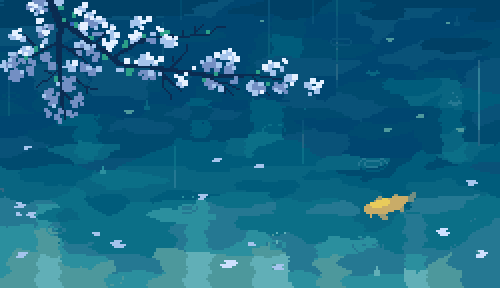
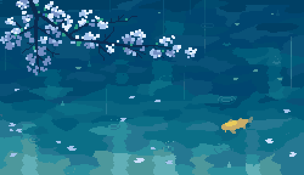

El Arte
El Arte de 1041uuu es principalmente pixcelado (De alguna forma se me hace mas comodo llamarlo Pixcel Art pero bueno, esta es una pagina en español) y a partir de ahi normalmente se enfoca en temas como la naturaleza o situaciones cotidianas de.... Sopongo que de japon (Yo no hablo Nintendo).E aqui unas cuantas imagenes realizadas por este artista que me han gustado:
 


Esta arte tambien a e utilizado en algunos trabajos de la U, es mas, la igen de fondo utilizada por esta pagina es tambien de este artista